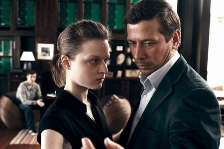
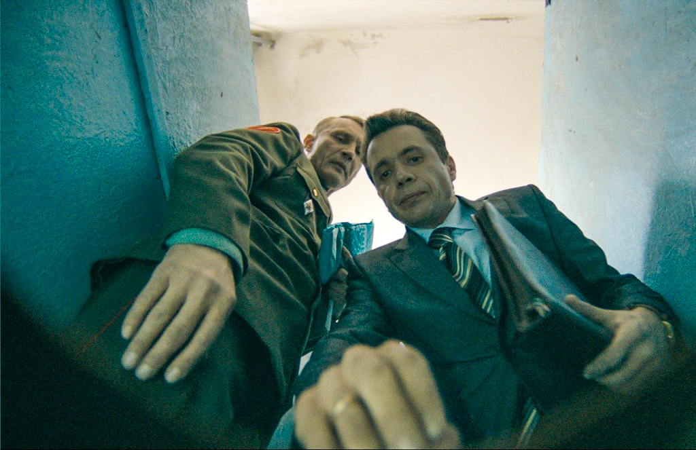

Наш фильм 2012 года. Состоит из четырёх историй.
Предыстория заполнилась фразой:
У вас есть романы? Сейчас романы популярны. У вас есть романы? Рассказы никому не нужны.
и конечно Влади из Касты.
Крутой фильм. И Влади там. Ему нужно попробовать серьёзную роль.
— Дима Волыхин (@volyx) 20 ноября 2015Первая
Тамада представляет будущим молодожёнам детальный план их свадьбы. Пара хочет знать все очень подробно и тамада даёт им эту подробность, опускаясь в фарс.
«А что я буду чувствовать?» — спрашивает будущая невеста. Тамада предлагает несколько вариантов эмоций, на выбор. Выбор также прост как между рисом и зерном. Рис выбран, потому что по-европейски.
Ведущий показывает как нужно танцевать первый танец, нежно, аккуратно.
Предлагает на выбор два вида дарения — открытое и закрытое. (Когда видно, кто сколько подарил и когда не видно) Невеста выбирает открытый: — Я хочу сразу знать кто-нас любит, а кто нет. Неудивительно, если ты ничего не чувствуешь — это хороший индикатор

Прям хочется посоветовать посмотреть этот отрывок все ведущим мероприятий.
Вторая
Круговорот взятки в природе. И всем надо и всех понимаешь. Кто за маму, кто за дочь, кто за сына, кто за себя.

Сцена в туалете в военкомате бесподобна и смешна. Комедии у наших пока получаются так себе, а вот трагикомедии на высоте. «Рассказы» этому подтверждение.
Комедии у наших пока получаются так себе, а вот трагикомедии на высоте. «Рассказы» этому подтверждение.
Цепочка взяток заканчивается сценой с президентом, где взятка дается доверием. Похоже, мило.
Третья
Про библиотекаршу, которой чтение книг дало дар предвидения. Теперь к ней обращается полиция с просьбой найти пропавшую девочку.
Пересказывать даже не имеет смысла. Это нужно смотреть, чувствовать и переживать. Так русской душой веет, что и грустно, и весело одновременно. Фильм не с душком, а с душой.
Фильм не с душком, а с душой.
Четвертая
И апокалипсис - четвертая история. На ней меня мотало по всей комнате, как пятиклассника.
Было как-то и неловко, и нелепо, и чувствовалось, что правда все это. Что происходит оно где-то рядом с тобой. И все думалось, что закончится всё как-нибудь глупо, как в сериалах и молоденькая девочка окажется дочкой его коллеги с работы. Но нет... Сегал добил, додержал.
Тезке по фамилии аплодирует другой Сигал.
Стоит смотреть. Стоит обсуждать. Пока начните с трейлера, чтоб уж точно посмотреть.